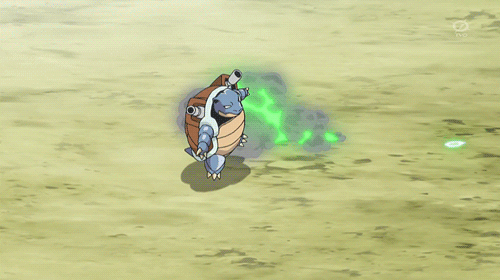
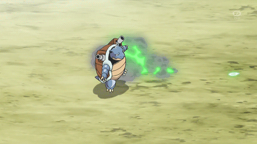
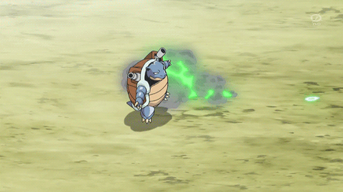

When I'm off-duty, I love to showcase my unexpected talent: gymnastics. The thrill of performing graceful flips and astounding stunts never fails to captivate audiences. It's an incredible way for me to express my agility and creativity, setting me apart from other Pokémon. In my downtime, I indulge in a rather unique hobby - meticulously washing cars. I have a meticulous eye for detail, and I take pride in making vehicles shine like never before. Many trainers in the neighborhood seek out my services for the best car wash they can find, enjoying the extra touch of water-based spectacle that only I can provide. With my diverse talents and dedication to making the world cleaner and safer, I'm living proof that I'm not your average Blastoise. My passions and pursuits have allowed me to excel in unexpected ways, all while following my heart and making a positive impact on the world.
